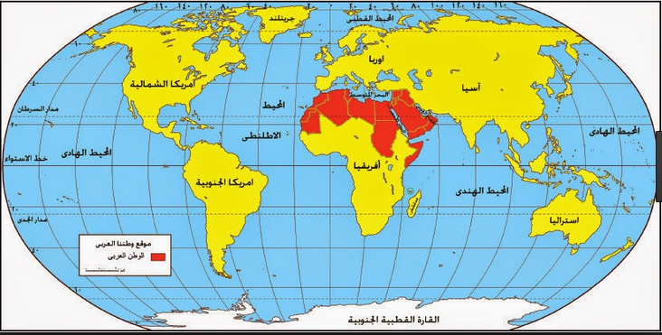

|
قارات العالم |
|  |

|
|
فيديو تعريفى |
قارات العالم السبعة
القارّة، هي كتلة ضخمة جداً من اليابسة. يتم تحديد القارة عموماً بواسطة بالعرف بدلاً من اعتماد معايير ضيقة؛ ثمة سبع مناطق جغرافية تعرف بأنها قارات، وهذه المناطق السبع مرتبة من الأكبر إلى الأصغر هي: آسيا، أفريقيا، أمريكا الشمالية، أمريكا الجنوبية، القارة القطبية الجنوبية، أوروبا، أستراليا. ثمة اختلافات في هذه التقسيمات، قد تدمج بعضها ليصبح عدد القارات أقل من سبعة؛ على سبيل المثال، تسمي بعض الأنظمة أفرو-أوراسيا أو أوراسيا أو الأمريكتين كقارات منفردة بذاتها.. غالباً ما تُجمع الجزر المحيطية مع القارة القريبة منها، وذلك لتكون كل الأراضي في العالم مقسمة إلى مناطق جغرافية. بموجب هذه الحقيقة، تُجمع معظم الدول والأقاليم الجزرية الواقعة في المحيط الهادئ مع قارة أستراليا لتشكيل منطقة جغرافية تسمى أوقيانوسيا. في الجيولوجيا، تُعرف القارة بأنها "إحدى كتل اليابسة الرئيسية على الأرض، بما في ذلك الأراضي البرية الجافة ووالرفوف القارية. تتوافق القارات الجيولوجية مع ست مناطق كبيرة من القشرة القارية الموجودة في الصفائح التكتونية، لكن يستثنى منها أجزاء قارية صغيرة مثل مدغشقر، حيث يُشار لها بالقارات الصغيرة. من المعروف أن القشرة القارية توجد فقط على الأرض.
التعريفات والاستخدام
اصطلاحاً، تعرف القارة بأنها "كتل كبيرة متصلة أو غير مترابطة من اليابسة، مفصولة عن بعضها البعض بمسطحات مائية". في التصنيفات الحديثة التي تسرد 5 قارات معترف بها أو أكثر، يوجد على الأقل قارتان ترتبطان ببعضهما براً بطريقةٍ ما (أي كتل قارية). أما استخدام تعبير "كبيرة" فقد يؤدي إلى تصنيف عشوائي؛ على سبيل المثال تعتبر جرينلاند أكبر جزيرة في العالم فحسب بمساحةٍ تقدّر بـ2,166,086 كيلومتر مربع (836,330 ميل2)، بينما تعتبر أستراليا أصغر قارة في العالم على الرغم من أن مساحتها 7,617,930 كيلومتر مربع (2,941,300 ميل2). يعرّف بيار جورج في كتابه "معجم المصطلحات الجغرافية" القارة بأنها مساحة واسعة من الأرض محاطة بالمحيطات لكل جزء من أجزاء اليابسة الرئيسية ساحل واحد ذي محيط جغرافي متصل، يُقسم لعدة من العناصر الجغرافي ذات محيط جغرافي حسب القارات ومعايير المناطق الجغرافية المختلفة
الامتداد
إن المعنى الأكثر تقييدًا للقارة هو استمرار مساحة من الأرض أو البر الرئيسي، مع الخط الساحلي وأي حدود برية تشكل حافة القارة. وبهذا المعنى، فإن مصطلح أوروبا القارية (يشار إليه أحيانًا في بريطانيا باسم «القارة») يُستخدم للإشارة إلى البر الرئيسي لأوروبا، باستثناء الجزر مثل بريطانيا العظمى وآيسلندا وأيرلندا ومالطا، بينما قد يشير مصطلح قارة أستراليا إلى البر الرئيسي لأستراليا، باستثناء غينيا الجديدة وتاسمانيا والجزر المجاورة الأخرى. وبالمثل، تشير الولايات المتحدة القارية إلى الولايات الثمانية والأربعين المتجاورة ومقاطعة كولومبيا وقد تشمل ألاسكا في شمال غرب القارة (تفصل كندا بينهما)، بينما تستثنى هاواي في المحيط الهادئ. من منظور الجيولوجيا أو الجغرافيا الطبيعية، قد تمتد القارة إلى ما وراء حدود الأراضي الجافة المستمرة لتشمل المنطقة المجاورة الضحلة والمغمورة بالمياه (الجرف القاري) والجزر الموجودة على الجرف (الجزر القارية)، إن كانت هيكليًا جزءًا من القارة. من هذا المنظور، فإن حافة الجرف القاري هي الحافة الحقيقية للقارة، إذ تختلف الشواطئ مع التغيرات في مستوى سطح البحر. وبهذا المعنى، تشكل جزر بريطانيا العظمى وأيرلندا جزءًا من أوروبا، بينما تشكل أستراليا وجزيرة غينيا الجديدة معًا قارة. قد يتجاوز مفهوم القارة الجرف القاري ليشمل الجزر المحيطية والأجزاء القارية، من ناحية البنية الثقافية. وبهذه الطريقة، تعتبر آيسلندا جزءًا من أوروبا ومدغشقر جزءًا من أفريقيا. ولإيصال المفهوم إلى أقصى حدوده، جمع بعض الجغرافيين الصفيحة القارية الأسترالية مع الجزر الأخرى في المحيط الهادئ في «شبه قارة» واحدة تسمى أوقيانوسيا. وهذا يقسم سطح الأرض بالكامل إلى قارات أو شبه قارات.
المساحة
تبلغ المساحة الإجمالية لجميع القارات هو 150,428,500 كم²، أي ما يقارب 29 ٪ من سطح الأرض البالغ 510,065,600 كم².
قارّة آسيا
المقالة الرئيسية آسيا- عدد الدول: 47 دولة معترف بها وبالإضافة إلى 4 كيانات شبة مستقلة.
- المساحة: حوالي: 43,820,000 كلم².
- عدد السكان: 4.4 مليار نسمة تقريباً (4,393,296,000 نسمة).
- أعلى قمة: جبل إفرست (نيبال - التبت) 8848 متر.
- أطول أنهارها: يانغتسي 6300 كيلومتر ويوجد في (جمهورية الصين الشعبية).
- أكبر بلدانها مساحة: روسيا
- أكبر مدنها: شنغهاي
- أقدم عاصمة فيها : دمشق
- أهم الحاصلات الزراعية: الأرز، القمح، الزيتون، الفول، قصب السكر، جوز الهند، الشاي، التمور.
- الثروات المعدنية : البترول، الذهب، البوكسيت، الفحم، النحاس، الرصاص، القصدير، الحديد، المنجنيز.
قارّة أفريقيا
المقالة الرئيسية افريقيا- عدد الدول:54 دولة مستقلة.
- المساحة: 30,000,319 كم².
- عدد السكان: 1.2 مليار نسمة تقريباً.
- أكبر بلدانها مساحة: الجزائر (2381741 كم²).
- أعلى قممها: قمة كليمانجارو (تنزانيا) 5895 متر.
- أطول أنهارها: نهر النيل 6695 كلم
- أكبر بلدانها سكانا : نيجيريا (170,123,740 نسمة).
- أكبر مدنها: لاغوس
- أكبر دولة مصدرة للنفط الجزائر
- أهم الثروات الزراعية : القمح، الذرة، الزيتون، عنب، قصب السكر، التمور، الحمضيات، الفول السوداني.
- أهم الثروات المعدنية : البترول، الفحم،الحديد، النحاس، الذهب، الماس، الفوسفات، الكوبالت،.
قارّة أوروبا
المقالة الرئيسية أوروبا- عدد الدول المستقلة: 53 دولة مستقلة
- المساحة: 10,531,001 كم²
- عدد السكان: 738 مليون نسمة
- أعلى قممها: قمة إلبروس 5633 متر (في سلسلة جبال القوقاز)
- أطول أنهارها: نهر فولغا 3688 كلم ويصب في بحر قزوين
- أكبر بلدانها مساحة: روسيا
- أكبر بلدانها مساحة: روسيا
- أكبر المدن: موسكو
- الثروات الزراعية: القمح، الذرة، الشعير، الأرز، الشمندر السكري، القطن، الزيتون، العنب، الحمضيات، الأخشاب.
- الثروات المعدنية : البترول، الفحم، النيكل، البوكسيت، الحديد، الزنك، المنغنيز، الكبريت، الرصاص، النحاس،.
قارّة أمريكا الشمالية
المقالة الرئيسة : أمريكا الشمالية- عدد الدول المستقلة: 37 دولة مستقلة
- المساحة: 24,257,000 كم²
- أكبر بلدانها من حيث المساحة : كندا 9.984.670 كم2
- عدد السكان: 573 مليون نسمة
- أعلى قممها: قمة دينالي في آلاسكا 6193 متر
- أطول أنهارها: نهر المسيسيبي
- أكبر مدنها: مكسيكو
- أهم الثروات الزراعية: القمح، الذرة، الفواكه، العنب، الشوفان، السكر، البن، القطن، الموز، الأخشاب.
- أهم الثروات المعدنية : البترول، الفحم، النيكل، القصدير، الكبريت، الفوسفات، البوكسيت، النحاس، الحديد، الرصاص، الزنك، الفضة، الذهب.
قارّة أمريكا الجنوبية
المقالة الرئيسية أمريكا الجنوبية- عدد الدول المستقلة: 12 دولة
- المساحة: 17,810,000 كم²
- عدد السكان: 418 مليون نسمة
- أكبر بلدانها مساحة: البرازيل 8,511,965 كم²
- أكبر بلدانها سكانا: البرازيل 151 مليون نسمة
- أعلى قممها: أكونكاغوا في الأرجنتين 6960 متر
- أطول أنهارها: نهر الأمازون في البرازيل 6570 كلم
- أكبر مدنها: ساو باولو 10 ملايين نسمة
- الثروات الزراعية: الموز، الحمضيات، الكتان، البن، الكاكاو، قصب السكر، العنب، القمح، الذرة، القطن، المطاط.
- الثروات المعدنية : البترول، الفحم، القصدير، الزمرد، الألماس، البوكسيت، النحاس، الحديد، المنجنيز.